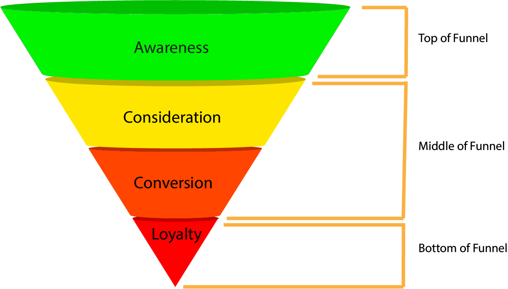

Welcome to Marketing Tactics! This site is dedicated to teaching new marketers and DIYers about marketing tactics and how they fit into the overall marketing funnel. When we began our journey into marketing, there were so many things to know and remember that it all seemed very overwhelming. As we learned more, the pieces began to fit together and the larger picture came into focus. That took us a bit of time and we’re hoping to save you some time so you can get onto doing great things. But first, lets define a few key terms to eliminate confusion.
- Marketing is the activity or business of promoting and selling products and services, including market research and advertising.
- A marketing strategy is a long-term plan for achieving a company’s goals by understanding the needs of customers, whilst creating a distinct and sustainable competitive advantage.
- Marketing tactics are the specific actions that marketers take to promote a product or service and achieve their marketing goals.
In the first line of the paragraph above, we mentioned the marketing funnel. You may be asking, "What is a marketing funnel?" If you look below, you will see a graphical representation of the funnel. The first thing you'll notice is the inverted triangle shape. This shape corresponds to the general amount of consumers that move through each step. The funnel begins at the top with the Awareness stage and continues down to the Loyalty stage. We'll talk about the steps in more detail on each of their pages of this website.
As an example, let's assume you are starting a social media campaign. During the Awareness stage, you may be running ads or creating content to acquire viewers. When those viewers decide they need a product and/or service similar to yours, they begin to research their options. The number of prospects who consider you will be less than your total views. Of those prospects, even fewer will convert. Of those who convert, even fewer will become loyal customers. These diminishing numbers are represented by the inverted triangle shape of the funnel. Also note, most people will move through the funnel sequentially, but there are others who may jump a step. For example, a consumer in a position to buy now may see your ad the first time and immediately convert.

To learn more about which marketing tactics to use at each step of the funnel, select one of the links at the top of the page.